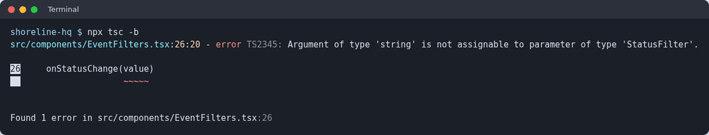
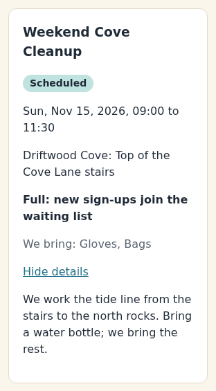
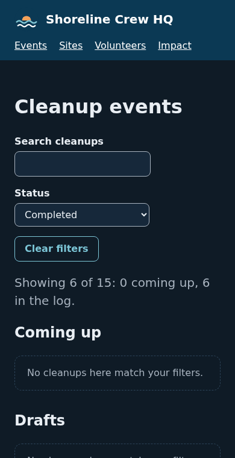

🎛️ Lesson 3.4: State and Events
Until now, Shoreline Crew HQ has been a beautifully typed poster: it draws the data it was given and then sits still. Today it starts to listen. You will give components a memory with useState, answer clicks and keystrokes with typed event handlers, and learn the two questions that decide where every piece of state belongs. By the end, organizers can search the events page and filter it by status, and every card can open its own details.
🎯 Learning Objectives
By the end of this lesson, you will be able to:
- Explain why a plain variable cannot remember anything between renders, and give a component state with
useState - Handle clicks, typing and menu changes with typed event handlers such as
ChangeEvent<HTMLInputElement>, and pass a function instead of calling it - Choose when
useState<T>needs a type argument: unions, empty arrays and "nothing yet" values - Update state from a snapshot or with an updater function, and copy objects and arrays instead of changing them
- Lift shared state to the closest common parent, pass it down as props with callback props for changes, and derive everything else
- Add search, a status filter and per-card details to the HQ's events page, plus readable dates with a
formatDatehelper
📦 Code for this lesson
Starting code: lesson-10-start.zip · Finished code: lesson-10-end.zip. Each folder has a README with the commands to run it. Copy .env.example to .env.local in shoreline-hq before npm run dev.
In This Lesson
🧠 Giving a Component a Memory
A component is a function React calls whenever it needs to know what the screen should look like. That is why everything you have built so far is still: the function runs, returns elements, and is done. To count check-ins at the welcome table, a component would have to remember a number between one run and the next. Create src/Scratch.tsx in shoreline-hq (your experiment file for this lesson) and try the obvious approach, a plain variable:
export function CheckInCounter() {
let checkedIn = 0
function handleClick() {
checkedIn = checkedIn + 1
console.log(checkedIn)
}
return (
<>
<p>{checkedIn} checked in</p>
<button type="button" onClick={handleClick}>
Check in one more
</button>
</>
)
}npx tsc -b is happy: the types are fine. Rendered in the browser and clicked three times, the console prints 1, 2 and 3, but the page still says 0 checked in. Two things went wrong. Changing a variable does not tell React anything, so nothing is drawn again. And even if something else made React draw this component again, the function would start from the top and run let checkedIn = 0. Local variables live for one render, and are gone after it.
The linter already knows this pattern. npm run lint prints two warnings; the first one:
Expected output (npm run lint, first warning)
⚠ react(immutability): Cannot reassign variable after render completes
╭─[src/Scratch.tsx:5:5]
1 │ export function CheckInCounter() {
2 │ let checkedIn = 0
· ────┬────
· ╰── `checkedIn` is declared here
3 │
4 │ function handleClick() {
5 │ checkedIn = checkedIn + 1
· ────┬────
· ╰── Cannot reassign `checkedIn` after render completes
6 │ console.log(checkedIn)
╰────
help: Reassigning `checkedIn` after render has completed can cause inconsistent behavior on subsequent renders. Consider using state instead
note: React Compiler skipped optimizing this component or hook. Additional guidance: https://react.dev/reference/eslint-plugin-react-hooks/lints/immutability
...
Found 2 warnings and 0 errors."Consider using state instead" is exactly the fix. State is data React keeps for a component between renders. You ask for it with the useState Hook:
import { useState } from 'react'
export function CheckInCounter() {
const [checkedIn, setCheckedIn] = useState(0)
return (
<>
<p>{checkedIn} checked in</p>
<button type="button" onClick={() => setCheckedIn(checkedIn + 1)}>
Check in one more
</button>
</>
)
}Clicked three times, this one says 3 checked in. Read the important line from the right:
useState(0)asks React for a piece of state whose first value is0.- It returns a pair, which you unpack with array destructuring: the current value (
checkedIn) and a setter (setCheckedIn). The names are yours; the convention isthingandsetThing. - Calling the setter does two things: React stores the new value, and it schedules a re-render. On that next render,
useState(0)returns the stored value instead of0; the initial value is only used the very first time.
TypeScript inferred everything from the 0. Hover over the two names in VS Code: checkedIn is a number and setCheckedIn is a Dispatch<SetStateAction<number>>, React's name for "a function you call with a new number (or with a function that works one out, as you will see shortly)".
💡 Mental model: the roster on the clipboard
At a cleanup, the organizer at the welcome table keeps a clipboard. Volunteers come and go, the organizer walks off for coffee and comes back, but the clipboard still says who has checked in. State is that clipboard: React holds it for your component, hands you what it says each time the component is drawn (checkedIn), and gives you one pen to change it (setCheckedIn). Writing on your palm (a local variable) does not count: it washes off at the next render.
The Rules of Hooks
Functions whose names start with use are Hooks. React tells your component's state apart by the order in which Hooks are called during a render: the first useState call gets the first stored value, the second gets the second. So two rules keep that order the same every time:
- Call Hooks at the top level of a component, before any early
return, never inside anif, a loop or a nested function. - Call Hooks only from components (or from your own Hooks, Lesson 4.2), never from plain functions.
You do not have to memorize them: the template's .oxlintrc.json turns on react/rules-of-hooks as an error, and you will see its message in the Common Mistakes.
💡 Why this matters
Every interactive screen you will build, in any React job, is state plus events: a search box, a "remember me" checkbox, an open menu, a shopping cart. The questions this lesson trains (what is the state, who owns it, what can be worked out from it) are the ones senior developers ask in design reviews, and most "it shows the wrong thing" bugs come from getting one of them wrong.
🖱️ Typed Event Handlers
You have already handed React a function to call later: onClick={() => setCheckedIn(checkedIn + 1)}. Event props are named in camelCase (onClick, onChange, onKeyDown, onFocus, onBlur), and their value is a function, not a string of code as in old HTML. React calls it when the event happens and passes it an event object. Here is a search box with a named handler:
import { useState, type ChangeEvent } from 'react'
export function SearchBox() {
const [query, setQuery] = useState('')
function handleChange(event: ChangeEvent<HTMLInputElement>) {
setQuery(event.target.value)
}
return (
<>
<label htmlFor="search">Search</label>
<input id="search" value={query} onChange={handleChange} />
<p>Searching for: {query}</p>
<button type="button" onClick={() => setQuery('')}>
Clear
</button>
</>
)
}Three things to notice:
onChange={handleChange}passes the function itself. WritinghandleChange()would call it immediately, while drawing; the Common Mistakes show what that does.- The handler's parameter is typed
ChangeEvent<HTMLInputElement>, imported withtypefromreact. The type argument says which element fired the event, soevent.targetis anHTMLInputElementandevent.target.valueis astring. - React's
onChangefires on every keystroke, not only when the field loses focus as the browser's ownchangeevent does. That is what makes live search possible.
Inline handlers get their types for free
The Clear button's handler is an arrow function written right in the prop. You did not annotate anything, and you do not need to: this is the contextual typing from Lesson 2.3. TypeScript knows what onClick and onChange on these elements expect, so a callback written in place gets its parameter type from there. Hover over event in onChange={(event) => setQuery(event.target.value)} and VS Code shows ChangeEvent<HTMLInputElement, HTMLInputElement>.
A named function is written somewhere else, so it has no context. Leave its parameter unannotated and TypeScript refuses to guess:
Expected output (npx tsc -b, function handleChange(event) {)
src/Scratch.tsx:6:25 - error TS7006: Parameter 'event' implicitly has an 'any' type.
6 function handleChange(event) {
~~~~~
Found 1 error in src/Scratch.tsx:6TS7006 is the same message you met with untyped parameters in Lesson 2.1. The course's habit: inline arrows for one-liners (types come free), named handlers with an annotated event when the handler does more. And if you annotate the wrong element, the message tells you exactly which events do not fit:
Expected output (npx tsc -b, ChangeEvent<HTMLSelectElement> on an input, trimmed)
src/Scratch.tsx:13:40 - error TS2322: Type '(event: ChangeEvent<HTMLSelectElement, Element>) => void' is not assignable to type 'ChangeEventHandler<HTMLInputElement, HTMLInputElement>'.
Types of parameters 'event' and 'event' are incompatible.
Type 'ChangeEvent<HTMLInputElement, HTMLInputElement>' is not assignable to type 'ChangeEvent<HTMLSelectElement, Element>'.
Type 'HTMLInputElement' is missing the following properties from type 'HTMLSelectElement': length, options, selectedIndex, selectedOptions, and 4 more.
13 <input id="search" value={query} onChange={handleChange} />
~~~~~~~~
...Read it from the bottom up: an input element is not a select element (it lacks options, selectedIndex and more), so a handler for select changes cannot handle input changes.
The event types you will use most
| Prop | Element | Handler parameter type | What you usually read |
|---|---|---|---|
onChange | text, search, number, date input | ChangeEvent<HTMLInputElement> | event.target.value (always a string) |
onChange | checkbox input | ChangeEvent<HTMLInputElement> | event.target.checked (a boolean) |
onChange | <select> | ChangeEvent<HTMLSelectElement> | event.target.value (a string) |
onChange | <textarea> | ChangeEvent<HTMLTextAreaElement> | event.target.value |
onClick | <button> | MouseEvent<HTMLButtonElement> | often nothing: () => ... |
onKeyDown | any focusable element | KeyboardEvent<HTMLInputElement> (or the element) | event.key, such as 'Escape' |
These are React's own types, imported from react (import type { ChangeEvent, MouseEvent } from 'react'), not the DOM's global MouseEvent. React wraps each browser event in a synthetic event that works the same in every browser; the original is still there as event.nativeEvent if you ever need it. Forms and their submit events are Lesson 3.5's subject.
🧩 Version note: two type arguments on ChangeEvent
With @types/react 19.3, hovers and error messages show ChangeEvent<HTMLInputElement, HTMLInputElement>: the second argument describes event.target. You only ever need to write the first one, and articles written before this change show only one.
🏷️ When useState Needs a Type
useState is a generic function, like the first<T> you wrote in Lesson 2.3: its declaration is useState<S>(initialState: S), and TypeScript usually infers S from the initial value. useState('') is string state, useState(0) is number, useState(false) is boolean. Inference falls short in three situations.
1. The state is one of a few words
The events page's status filter can be 'all' or one of the four EventStatus words. Let inference handle it and this compiles without a murmur:
import { useState } from 'react'
export function StatusPicker() {
const [status, setStatus] = useState('all')
return (
<button type="button" onClick={() => setStatus('finished')}>
Showing: {status}
</button>
)
}'finished' is not a status, but useState('all') made the state a plain string, so any string is welcome. (A let widens a literal the same way, Lesson 2.1.) Write the union as a type argument and TypeScript holds every update to it:
import { useState } from 'react'
import type { EventStatus } from './api/types.ts'
type StatusFilter = EventStatus | 'all'
export function StatusPicker() {
const [status, setStatus] = useState<StatusFilter>('all')
return (
<button type="button" onClick={() => setStatus('finished')}>
Showing: {status}
</button>
)
}Expected output (npx tsc -b)
src/Scratch.tsx:10:52 - error TS2345: Argument of type '"finished"' is not assignable to parameter of type 'SetStateAction<StatusFilter>'.
10 <button type="button" onClick={() => setStatus('finished')}>
~~~~~~~~~~
Found 1 error in src/Scratch.tsx:10SetStateAction<StatusFilter> is what the setter accepts: a StatusFilter, or a function that returns one. This is the useState<T> Lesson 2.3 promised.
2. The state starts as an empty array
An empty array tells TypeScript nothing about what will go in it. useState([]) infers never[], an array that can hold nothing at all, and the first time you add an id:
Expected output (npx tsc -b, useState([]), first error)
src/Scratch.tsx:7:55 - error TS2322: Type 'string' is not assignable to type 'never'.
7 <button type="button" onClick={() => setSavedIds([...savedIds, 'e08'])}>
~~~~~~~~~~~Say what the array will hold: useState<string[]>([]).
3. The state starts as "nothing yet"
A selected event does not exist until someone selects one. useState(null) would infer the type null forever; write both possibilities: useState<CleanupEvent | null>(null). Then TypeScript makes you check for null before reading .title, as in Lesson 3.3's conditional rendering. All four kinds side by side:
import { useState } from 'react'
import type { CleanupEvent, EventStatus } from './api/types.ts'
type StatusFilter = EventStatus | 'all'
export function StateExamples() {
const [query, setQuery] = useState('')
const [status, setStatus] = useState<StatusFilter>('all')
const [savedIds, setSavedIds] = useState<string[]>([])
const [selected, setSelected] = useState<CleanupEvent | null>(null)
return (
<>
<input aria-label="Search" value={query} onChange={(event) => setQuery(event.target.value)} />
<button type="button" onClick={() => setStatus('completed')}>
{status}
</button>
<button type="button" onClick={() => setSavedIds([...savedIds, 'e08'])}>
{savedIds.length} saved
</button>
<button type="button" onClick={() => setSelected(null)}>
{selected ? selected.title : 'Nothing selected'}
</button>
</>
)
}| Initial value | Write | State type |
|---|---|---|
| A string, number or boolean | useState('') | inferred: string |
| One word of a union | useState<StatusFilter>('all') | StatusFilter |
| An empty array | useState<string[]>([]) | string[] |
| Nothing yet | useState<CleanupEvent | null>(null) | CleanupEvent | null |
| An object of a known shape | useState<Filters>({ ... }) | Filters |
Annotate the edges, as in Lesson 2.1: the type argument is the edge of the state, and everything that reads it inherits the type.
🔁 Updating State the React Way
Each render sees a snapshot
The value useState hands you is a snapshot of the state for this render. Calling the setter does not change your variable; it asks for a new render in which useState returns the new value. That leads to a classic surprise:
import { useState } from 'react'
export function BagCounter() {
const [bags, setBags] = useState(0)
function addThreeWrong() {
setBags(bags + 1)
setBags(bags + 1)
setBags(bags + 1)
}
function addThree() {
setBags((current) => current + 1)
setBags((current) => current + 1)
setBags((current) => current + 1)
}
return (
<>
<p>Bags: {bags}</p>
<button type="button" onClick={addThreeWrong}>
Add 3 (wrong)
</button>
<button type="button" onClick={addThree}>
Add 3
</button>
</>
)
}Starting from 0, a click on Add 3 (wrong) shows Bags: 1. All three calls read the same snapshot, bags is 0 in all of them, so all three say "make it 1". A click on Add 3 then shows Bags: 4: each call passes an updater function, and React runs them one after another, feeding each one the result of the previous one (1 + 1, 2 + 1, 3 + 1).
The rule of thumb: when the new value depends on the old one, pass a function: setBags((current) => current + 1), setShowDetails((shown) => !shown). TypeScript types current from the state, so there is nothing to annotate. When the new value does not depend on the old one (setQuery(''), setStatus('all')), pass the value.
Objects and arrays: copy, don't change
React decides whether anything changed by comparing the old and new value with Object.is: for objects and arrays, "is it the same object?". If you change an array in place and hand the same array back, React sees the same array and does nothing:
import { useState } from 'react'
export function SavedEvents() {
const [savedIds, setSavedIds] = useState<string[]>([])
function save(id: string) {
savedIds.push(id)
setSavedIds(savedIds)
}
return (
<button type="button" onClick={() => save('e08')}>
{savedIds.length} saved
</button>
)
}Clicked three times, the button still says 0 saved, although the array now holds three ids. npx tsc -b and npm run lint both pass this code without a word, so this is a habit to build, not something a tool will catch for you. Make a new array or object instead, with the same non-mutating tools as in Lesson 3.3:
import { useState } from 'react'
interface Filters {
query: string
onlyOpen: boolean
}
export function CopyExamples() {
const [savedIds, setSavedIds] = useState<string[]>([])
const [filters, setFilters] = useState<Filters>({ query: '', onlyOpen: false })
function save(id: string) {
setSavedIds([...savedIds, id]) // a new array with one more id
}
function unsave(id: string) {
setSavedIds(savedIds.filter((savedId) => savedId !== id)) // a new array without it
}
function setQuery(query: string) {
setFilters({ ...filters, query }) // a new object: every old property, one replaced
}
return (
<>
<input aria-label="Search" value={filters.query} onChange={(event) => setQuery(event.target.value)} />
<button type="button" onClick={() => save('e08')}>
Save ({savedIds.length})
</button>
<button type="button" onClick={() => unsave('e08')}>
Unsave
</button>
</>
)
}| You want to… | Not this (changes the old value) | This (makes a new one) |
|---|---|---|
| Add to an array | ids.push(id) | [...ids, id] |
| Remove from an array | ids.splice(i, 1) | ids.filter((x) => x !== id) |
| Sort or reverse | list.sort(), list.reverse() | list.toSorted(), list.toReversed() |
| Change one property | filters.query = q | { ...filters, query: q } |
⬆️ Where State Lives: Lifting and Deriving
The project's search box lives in a new EventFilters component, but the lists that must change live in EventsPage's EventLists. Sibling components cannot reach into each other; data in React flows down, through props. So the state goes to the closest common parent of everything that reads it, here EventsPage, and the search box becomes a controlled component: it shows the value it is given and reports changes through a callback prop, a function prop like the onSelect: (siteId: string) => void Lesson 3.2 described. Moving state up like this is called lifting state up.
The data makes a round trip: a keystroke goes up through a callback, the parent updates its state, and the new value comes back down as props to everyone who needs it. Notice EventCard at the bottom: whether one card's details are open matters to nobody else, so that state stays inside the card. Two questions place every piece of state:
- Can it be worked out from something you already have? Then it is not state. Work it out during render (a derived value).
- Who reads it and who changes it? Put it in the closest component above all of them, and no higher.
Derive, don't store
Question 1 is the one that bites. It is tempting to keep the filtered list in state too and update it whenever the search changes:
import { useState } from 'react'
import { events } from './data/events.ts'
export function EventSearch() {
const [query, setQuery] = useState('')
const [visible, setVisible] = useState(events)
function handleChange(value: string) {
setQuery(value)
setVisible(events.filter((event) => event.title.toLowerCase().includes(query)))
}
return (
<>
<input aria-label="Search" value={query} onChange={(event) => handleChange(event.target.value)} />
<p>Matches: {visible.length}</p>
</>
)
}It compiles and lints cleanly, and it is wrong. Type cove one letter at a time and watch the count:
| You have typed | Stored list says | Derived list says |
|---|---|---|
c | Matches: 15 | Matches: 11 |
co | Matches: 11 | Matches: 2 |
cov | Matches: 2 | Matches: 1 |
cove | Matches: 1 | Matches: 1 |
The stored list is always one keystroke behind, because handleChange filters with query from the current snapshot, the value before this keystroke. The fix is not a cleverer update; it is less state. Keep only what the user chose and work the list out on every render:
import { useState } from 'react'
import { events } from './data/events.ts'
export function EventSearch() {
const [query, setQuery] = useState('')
const visible = events.filter((event) => event.title.toLowerCase().includes(query))
return (
<>
<input aria-label="Search" value={query} onChange={(event) => setQuery(event.target.value)} />
<p>Matches: {visible.length}</p>
</>
)
}Now there is one source of truth, query, and the list can never disagree with it. Filtering 15 cleanups (or a few thousand) on every render is fast; Lesson 5.3 shows how to measure before you reach for anything cleverer.
💡 Mental model: the meeting point
Two teams working different ends of the beach cannot shout to each other, so they agree on a meeting point with the organizer. The organizer (the parent) holds the plan (the state); each team gets its instructions (props) and radios back what changed (callbacks). And nobody writes "the number of bags so far" on a second clipboard: they count the bags in the pile when someone asks.
⚠️ Common Mistakes
⚠️ Calling the handler instead of passing it
import { useState } from 'react'
export function DetailsToggle() {
const [open, setOpen] = useState(false)
return (
<>
<button type="button" onClick={setOpen(!open)}>
Show details
</button>
{open && <p>Gloves and bags are provided.</p>}
</>
)
}Expected output (npx tsc -b, trimmed)
src/Scratch.tsx:8:29 - error TS2322: Type 'void' is not assignable to type 'MouseEventHandler<HTMLButtonElement> | undefined'.
8 <button type="button" onClick={setOpen(!open)}>
~~~~~~~
...setOpen(!open) runs while the button is being drawn and returns nothing (void), and nothing is not a click handler. If you run it anyway (the dev server does not type-check), setting state during render causes another render, which sets state again, and React stops with:
Browser console (dev server)
Too many re-renders. React limits the number of renders to prevent an infinite loop.Pass a function: onClick={() => setOpen(!open)}.
⚠️ A Hook after an early return
import { useState } from 'react'
export function EventNote({ editable }: { editable: boolean }) {
if (!editable) {
return null
}
const [note, setNote] = useState('')
return <textarea aria-label="Note" value={note} onChange={(event) => setNote(event.target.value)} />
}Expected output (npm run lint)
× react-hooks(rules-of-hooks): React Hook "useState" is called conditionally. React Hooks must be called in the exact same order in every component render.
╭─[src/Scratch.tsx:7:27]
6 │ }
7 │ const [note, setNote] = useState('')
· ──────┬─────
· ╰── This Hook call is not reachable on every render path.
8 │ return <textarea aria-label="Note" value={note} onChange={(event) => setNote(event.target.value)} />
╰────
help: Move the Hook call before the condition, or call it unconditionally and branch inside the Hook/effect instead.
Found 0 warnings and 1 error.The early return means useState runs on some renders and not on others, so React's count of Hooks would shift. This one is an error (×), not a warning. Move the Hook above the if.
⚠️ A value with no onChange
import { useState } from 'react'
export function SearchBox() {
const [query] = useState('cove')
return <input aria-label="Search" value={query} />
}Both tools pass it, and the field ignores every keystroke: it is controlled by a value nothing ever changes. React says so in the console:
Browser console (dev server)
You provided a `value` prop to a form field without an `onChange` handler. This will render a read-only field. If the field should be mutable use `defaultValue`. Otherwise, set either `onChange` or `readOnly`.⚠️ Changing state in place
savedIds.push(id) followed by setSavedIds(savedIds) hands React the same array, so nothing redraws, and no tool warns you. Make a new one: setSavedIds([...savedIds, id]).
⚠️ Storing what you can work out
A filtered list, a count, a "is anything filtered?" flag: if it can be computed from state and props, compute it during render. Stored copies fall out of date.
🛠️ Project: Search and Filters for the Events Page
With 15 cleanups on one page, organizers already scroll. Today they get a search box and a status filter, a line that says how many cleanups are showing, a Clear filters button that only appears when something is filtered, and a Show details button on every card. First, a promise from Lesson 3.3: dates people can read.
Start both servers (node server.ts in shoreline-api, npm run dev in shoreline-hq) and keep http://localhost:5173/events open. Delete src/Scratch.tsx if you still have it.
Step 1: Dates people can read (6 min)
The cards show dates the way the API sends them, YYYY-MM-DD. Organizers read a weekday and a month name much faster. The browser's Intl.DateTimeFormat does the formatting; the one thing to get right is the time zone. Create src/utils/format.ts:
import type { DateString } from '../api/types.ts'
// Made once, used for every date: weekday, month name, day and year
const dateFormat = new Intl.DateTimeFormat('en-US', {
weekday: 'short',
month: 'short',
day: 'numeric',
year: 'numeric',
})
// The API's dates are days on the crew's calendar ("YYYY-MM-DD"). JavaScript reads a date
// alone as midnight UTC, which is still the day before on the US west coast; with a time
// and no time zone it reads the local midnight instead.
export function formatDate(date: DateString): string {
return dateFormat.format(new Date(`${date}T00:00`))
}The comment is the important part. Here is the same day formatted both ways on a computer set to US Pacific time:
const day = '2026-11-15'
const fmt = new Intl.DateTimeFormat('en-US', { weekday: 'short', month: 'short', day: 'numeric', year: 'numeric' })
console.log(fmt.format(new Date(day)))
console.log(fmt.format(new Date(`${day}T00:00`)))Output (Node, US Pacific time)
Sat, Nov 14, 2026
Sun, Nov 15, 2026The first line is a day early: new Date('YYYY-MM-DD') means midnight UTC, which is still the previous evening in Port Marisol. Adding T00:00 without a time zone means midnight wherever the browser is. The formatter is created once at module level because the options never change. Now use it. In src/components/EventCard.tsx, change these lines:
import { getAvailability } from '../utils/availability.ts'
+import { formatDate } from '../utils/format.ts'
import { SpotsLine } from './SpotsLine.tsx' <p>
- <time dateTime={event.date}>{event.date}</time>, {event.startTime} to {event.endTime}
+ <time dateTime={event.date}>{formatDate(event.date)}</time>, {event.startTime} to{' '}
+ {event.endTime}
</p>The dateTime attribute keeps the machine-readable date for browsers and assistive technology; only the visible text changes. Do the same on the home page's "Next cleanup" card in src/pages/HomePage.tsx:
import { events } from '../data/events.ts'
+import { formatDate } from '../utils/format.ts' <p>
- {nextCleanup.title}, <time dateTime={nextCleanup.date}>{nextCleanup.date}</time> at{' '}
+ {nextCleanup.title},{' '}
+ <time dateTime={nextCleanup.date}>{formatDate(nextCleanup.date)}</time> at{' '}
{nextCleanup.startTime}.Step 2: EventFilters, a controlled component (12 min)
The filters own no state: they show the values they are given and report changes. Create src/components/EventFilters.tsx:
import type { ChangeEvent } from 'react'
import { isEventStatus } from '../api/client.ts'
import type { EventStatus } from '../api/types.ts'
export type StatusFilter = EventStatus | 'all'
interface EventFiltersProps {
query: string
status: StatusFilter
onQueryChange: (query: string) => void
onStatusChange: (status: StatusFilter) => void
onClear: () => void
}
export function EventFilters({
query,
status,
onQueryChange,
onStatusChange,
onClear,
}: EventFiltersProps) {
const filtering = query !== '' || status !== 'all'
// A <select> hands over a string: check it is one of ours before passing it up
function handleStatusChange(event: ChangeEvent<HTMLSelectElement>) {
const value = event.target.value
onStatusChange(isEventStatus(value) ? value : 'all')
}
return (
<search className="filters">
<div className="field">
<label htmlFor="event-search">Search cleanups</label>
<input
id="event-search"
type="search"
value={query}
onChange={(event) => onQueryChange(event.target.value)}
/>
</div>
<div className="field">
<label htmlFor="event-status">Status</label>
<select id="event-status" value={status} onChange={handleStatusChange}>
<option value="all">All statuses</option>
<option value="scheduled">Scheduled</option>
<option value="completed">Completed</option>
<option value="cancelled">Cancelled</option>
<option value="draft">Draft</option>
</select>
</div>
{filtering && (
<button type="button" className="button-secondary" onClick={onClear}>
Clear filters
</button>
)}
</search>
)
}StatusFilteris the union the filter can hold: everyEventStatusplus'all'. It is exported forEventsPage; exporting a type from a component file is fine (Lesson 3.3's FAQ).- Three callback props, typed with the function types from Lesson 2.3.
onCleartakes nothing and returns nothing:() => void. - The search input uses an inline handler:
eventis typed for free, andevent.target.valueis thestringthe prop wants. filteringis a derived value: the Clear button appears only when there is something to clear (&&with a real boolean, Lesson 3.3).- Every field has a
<label htmlFor>matching itsid, so clicking the label focuses the field and screen readers announce its name. The<search>element marks the area as a search landmark (current versions of the major browsers support it);type="search"gives the input a clear button in some browsers.
Look at handleStatusChange. A <select> hands over a string, whatever its options say. Pass it straight up with onStatusChange(event.target.value) and TypeScript objects:

<select> always hands over a string. The prop wants a StatusFilter, so TypeScript asks you to prove the string is one of the five words first.Expected output (npx tsc -b)
src/components/EventFilters.tsx:26:20 - error TS2345: Argument of type 'string' is not assignable to parameter of type 'StatusFilter'.
26 onStatusChange(value)
~~~~~
Found 1 error in src/components/EventFilters.tsx:26This is where Lesson 2.4's isEventStatus guard earns its keep: isEventStatus(value) ? value : 'all' narrows the string to an EventStatus when it is one, and falls back to 'all' otherwise (which is what the first option means anyway). No as, no trust: if someone edits an option's value to a word the API does not know, the filter quietly shows everything instead of nothing. Then add the styles for fields and buttons at the end of src/index.css:
/* Filters and buttons (Lesson 3.4) */
.filters {
display: flex;
flex-wrap: wrap;
align-items: flex-end;
gap: 1rem 1.5rem;
margin-bottom: 1rem;
}
.field {
display: flex;
flex-direction: column;
gap: 0.25rem;
font-weight: 600;
}
.field input,
.field select {
min-width: 14rem;
padding: 0.5rem 0.75rem;
border: 1px solid var(--text-muted);
border-radius: 0.5rem;
background: var(--surface);
color: var(--text);
font: inherit;
font-weight: 400;
}
.button-secondary {
padding: 0.5rem 1rem;
border: 1px solid var(--link);
border-radius: 0.5rem;
background: transparent;
color: var(--link);
font: inherit;
font-weight: 600;
cursor: pointer;
}
.button-link {
padding: 0;
border: none;
background: none;
color: var(--link);
font: inherit;
text-decoration: underline;
cursor: pointer;
}The fields use the page's --surface, --text and --text-muted tokens, so they follow dark mode. Lesson 3.6 adds proper focus styles and moves these rules into CSS Modules.
Step 3: State in EventsPage, everything else derived (14 min)
EventsPage is the closest common parent of the filters and the lists, so the state goes here. Replace src/pages/EventsPage.tsx:
import { useState } from 'react'
import type { CleanupEvent } from '../api/types.ts'
import { EventFilters, type StatusFilter } from '../components/EventFilters.tsx'
import { EventList } from '../components/EventList.tsx'
import { events } from '../data/events.ts'
function matchesFilters(event: CleanupEvent, search: string, status: StatusFilter): boolean {
const statusMatches = status === 'all' || event.status === status
const text = `${event.title} ${event.description}`.toLowerCase()
return statusMatches && text.includes(search)
}
export function EventsPage() {
const [query, setQuery] = useState('')
const [status, setStatus] = useState<StatusFilter>('all')
// Derived values: worked out from state on every render, never stored
const search = query.trim().toLowerCase()
const visible = events.filter((event) => matchesFilters(event, search, status))
const upcoming = visible.filter((event) => event.status === 'scheduled')
const drafts = visible.filter((event) => event.status === 'draft')
const past = visible
.filter((event) => event.status === 'completed' || event.status === 'cancelled')
.toReversed()
const filtering = search !== '' || status !== 'all'
const noMatches = 'No cleanups here match your filters.'
function clearFilters() {
setQuery('')
setStatus('all')
}
return (
<>
<h1>Cleanup events</h1>
<EventFilters
query={query}
status={status}
onQueryChange={setQuery}
onStatusChange={setStatus}
onClear={clearFilters}
/>
<p className="lead" role="status">
Showing {visible.length} of {events.length}: {upcoming.length} coming up,{' '}
{past.length} in the log.
</p>
<h2>Coming up</h2>
<EventList events={upcoming} emptyMessage={filtering ? noMatches : 'Nothing scheduled yet.'} />
<h2>Drafts</h2>
<EventList
events={drafts}
emptyMessage={filtering ? noMatches : 'No drafts waiting to be published.'}
/>
<h2>Past cleanups</h2>
<EventList events={past} emptyMessage={filtering ? noMatches : 'No cleanups in the log yet.'} />
</>
)
}- Two pieces of state, the two things a person chose:
query(inferredstring) andstatus(useState<StatusFilter>, because inference would widen'all'tostring). - Everything else is derived:
search(trimmed, lowercase),visible, the three lists,filtering, the count line. None of it is stored, so none of it can be out of date.matchesFiltersis a plain function above the component: it uses no state, so it does not need to live inside. onQueryChange={setQuery}passes the setter itself. It fits the prop's type: aDispatch<SetStateAction<string>>accepts astringand returns nothing, which is all(query: string) => voidasks for.clearFilterssets two pieces of state in one handler. React batches them: one re-render, not two.role="status"makes the count line a polite live region: screen readers announce "Showing 2 of 15..." after someone types, so a person who cannot see the lists change still knows what happened.- Each empty list says "No cleanups here match your filters." while filtering, and its usual sentence otherwise: the same
EventList, given a different message.
Type jetty into the search box:

query in EventsPage; the three lists, the count line and the Clear button are all worked out from it on the next render.Pick Completed in the status menu, then Clear filters: the field, the menu and all three lists go back to where they started, because they are all drawn from the same two pieces of state. (The Draft option finds nothing yet: the public list has no drafts until organizers sign in, in Lesson 5.2.)
Step 4: State that belongs to one card (8 min)
Whether one card's details are open matters to that card alone, so the state goes inside EventCard. Replace src/components/EventCard.tsx:
import { useState } from 'react'
import type { CleanupEvent } from '../api/types.ts'
import { sites } from '../data/sites.ts'
import { getAvailability } from '../utils/availability.ts'
import { formatDate } from '../utils/format.ts'
import { SpotsLine } from './SpotsLine.tsx'
import { StatusBadge } from './StatusBadge.tsx'
interface EventCardProps {
event: CleanupEvent
}
export function EventCard({ event }: EventCardProps) {
const [showDetails, setShowDetails] = useState(false)
const site = sites.find((s) => s.id === event.siteId)
return (
<article className="card event-card">
<h3>{event.title}</h3>
<p className="badges">
<StatusBadge status={event.status} />
</p>
<p>
<time dateTime={event.date}>{formatDate(event.date)}</time>, {event.startTime} to{' '}
{event.endTime}
</p>
<p>{site ? site.name : 'Site to be confirmed'}: {event.meetingPoint}</p>
<SpotsLine availability={getAvailability(event)} capacity={event.capacity} />
{event.suppliesProvided.length > 0 && (
<p className="muted">We bring: {event.suppliesProvided.join(', ')}</p>
)}
<button
type="button"
className="button-link"
aria-expanded={showDetails}
onClick={() => setShowDetails((shown) => !shown)}
>
{showDetails ? 'Hide details' : 'Show details'}
</button>
{showDetails && <p>{event.description}</p>}
</article>
)
}useState(false)is called at the top of the component, before anything else, as the rules of Hooks require.- The toggle uses an updater function,
(shown) => !shown, because the new value depends on the old one. - It is a real
<button type="button">(keyboard and screen reader support for free) styled to look like a link, andaria-expandedtells assistive technology whether the details are showing. TypeScript accepts the boolean: the attribute's type isBooleanish.

EventCard has its own showDetails state. The button tells screen readers whether the details are open with aria-expanded.Each of the 15 cards has its own showDetails: React keeps one piece of state per component instance, and it tells the instances apart by their place in the tree and their key. Open the details of the first card under "Coming up", then type cove: that card disappears from the list, and the Weekend Cove Cleanup card that moves to the first place is still closed, because its state belongs to key="e08", not to "first in the list". Exercise 2 shows what index keys would do here.
Step 5: Check it everywhere, and break it (10 min)
Check /events at phone size and in dark mode. Then use the page with the keyboard only: Tab to the search box, type, Tab to the menu and change it with the arrow keys, Tab on to Clear filters and press Enter.

Then break it once each, running npx tsc -b and undoing each change:
- In
EventsPage.tsx, changeuseState<StatusFilter>('all')touseState('all'). - In
EventCard.tsx, change the button'sonClicktoonClick={setShowDetails(!showDetails)}.
Expected output (1: the status state widened to string)
src/pages/EventsPage.tsx:19:74 - error TS2345: Argument of type 'string' is not assignable to parameter of type 'StatusFilter'.
19 const visible = events.filter((event) => matchesFilters(event, search, status))
~~~~~~
src/pages/EventsPage.tsx:38:9 - error TS2322: Type 'string' is not assignable to type 'StatusFilter'.
38 status={status}
~~~~~~
src/components/EventFilters.tsx:9:3 - The expected type comes from property 'status' which is declared here on type 'IntrinsicAttributes & EventFiltersProps'
9 status: StatusFilter
~~~~~~
Found 2 errors in the same file, starting at: src/pages/EventsPage.tsx:19Expected output (2: calling the setter while drawing, trimmed)
src/components/EventCard.tsx:36:9 - error TS2322: Type 'void' is not assignable to type 'MouseEventHandler<HTMLButtonElement> | undefined'.
36 onClick={setShowDetails(!showDetails)}
~~~~~~~
...The first one is worth a second look. Without the type argument, status is a string, and TypeScript reports it twice: where matchesFilters wants a StatusFilter, and where EventFilters does. The mistake is on line 15; the errors appear where the wider type is used. When an error points at a line that looks right, follow the type back to where it was made. Undo both, then run the full check:
npx tsc -b
npm run lint
npm run buildExpected output (npm run build)
> shoreline-hq@0.0.0 build
> tsc -b && vite build
vite v8.3.8 building client environment for production...
✓ 37 modules transformed.
computing gzip size...
dist/index.html 0.46 kB │ gzip: 0.30 kB
dist/assets/index-CBUQaRWs.css 3.22 kB │ gzip: 1.16 kB
dist/assets/index-CZ5dIZue.js 238.54 kB │ gzip: 74.05 kB
✓ built in 115ms37 modules instead of 35: EventFilters and format.ts. (Times, sizes and hashes will differ.)
Your own project: for the main screen of your Lesson 11.1 app, list every piece of state it needs (what the user typed, picked or opened) and, next to each one, the component that should own it. Then list three values on that screen you will derive instead of storing.
✅ Project Completion Checklist
- ☐
src/utils/format.tsformats dates withformatDate, and the cards and the home page use it - ☐
EventFiltersis a controlled component with typed callback props, and the status menu narrows its string withisEventStatus - ☐
EventsPageholdsqueryandstatusin state, and derives the lists, the count line and the empty messages - ☐ Clear filters appears only while filtering and resets both fields
- ☐ Every card opens and closes its own details, with
aria-expanded - ☐
npx tsc -b,npm run lintandnpm run buildall pass, andsrc/Scratch.tsxis deleted
🏋️ Hands-on Exercises
Exercises 1 and 2 are part of the lesson (about 15 minutes together, included in the lesson time).
🏋️ Exercise 1: A bag tally
On cleanup day, organizers count bags as they come off the beach. In src/Scratch.tsx, write a BagTally component that takes a label prop and shows the label as a heading, "N so far", and three buttons: Add one, Remove one (disabled at 0, so the count never goes below zero) and Reset. Show two tallies, "Trash bags" and "Recycling bags", and render them by temporarily returning them from CurrentPage in App.tsx. Does adding to one change the other?
💡 Hint
useState(0) infers number. Adding and removing depend on the old count, so use updater functions. A button's disabled prop takes a boolean.
✅ Solution
import { useState } from 'react'
interface BagTallyProps {
label: string
}
function BagTally({ label }: BagTallyProps) {
const [count, setCount] = useState(0)
return (
<section>
<h2>{label}</h2>
<p>{count} so far</p>
<button type="button" onClick={() => setCount((current) => current + 1)}>
Add one
</button>
<button
type="button"
disabled={count === 0}
onClick={() => setCount((current) => Math.max(0, current - 1))}
>
Remove one
</button>
<button type="button" onClick={() => setCount(0)}>
Reset
</button>
</section>
)
}
export function Tallies() {
return (
<>
<BagTally label="Trash bags" />
<BagTally label="Recycling bags" />
</>
)
}Remove one starts out disabled; after two adds and one remove the trash tally says "1 so far" while the recycling tally still says "0 so far". Each <BagTally> is its own instance with its own state, even though they come from the same function. Math.max is a second guard behind disabled. Put App.tsx back and delete Scratch.tsx when you are done.
🏋️ Exercise 2: Keys decide whose state it is
Lesson 3.3 warned that index keys put state on the wrong item once rows have state. Now they do. In EventList.tsx, change the map to events.map((event, index) => ( and the key to <li key={index}>. Run npx tsc -b and npm run lint (both pass). Then on /events: open the details of the first card under "Coming up", type cove in the search box, and look at the first card. Explain what you see, then put key={event.id} back.
💡 Hint
Which card is first after the search? And which key does the open state belong to: an event, or a position?
✅ Solution
After the search, the first card is Weekend Cove Cleanup, and it shows Hide details with its description open, although you never clicked it. With key={index}, React sees "item 0 is still here, with new props": it keeps the component at position 0, including its showDetails state, and gives it Weekend Cove's data. With key={event.id}, the Tide Pool card (its key gone from the list) is removed with its state, and Weekend Cove's card keeps its own, closed state. Neither tool can catch this: only the data's own id says which item is which.
🏋️ Exercise 3: Only cleanups with spots left (Stretch)
Optional stretch, not counted in the lesson time (about 20 minutes).
Add a checkbox to the filters, "Only cleanups with spots left", that hides every event whose getAvailability(event).kind is not 'open'. The checked state lives in EventsPage, Clear filters also unchecks it, and the button appears while it is checked.
💡 Hint
A checkbox reports event.target.checked, a boolean, so useState(false) needs no type argument. A checkbox's <label> can wrap the input instead of using htmlFor. Add two props to EventFiltersProps, and one more condition to visible and to both filtering values.
✅ Solution
import type { ChangeEvent } from 'react'
import { isEventStatus } from '../api/client.ts'
import type { EventStatus } from '../api/types.ts'
export type StatusFilter = EventStatus | 'all'
interface EventFiltersProps {
query: string
status: StatusFilter
onQueryChange: (query: string) => void
onStatusChange: (status: StatusFilter) => void
onlyOpen: boolean
onOnlyOpenChange: (onlyOpen: boolean) => void
onClear: () => void
}
export function EventFilters({
query,
status,
onQueryChange,
onStatusChange,
onlyOpen,
onOnlyOpenChange,
onClear,
}: EventFiltersProps) {
const filtering = query !== '' || status !== 'all' || onlyOpen
// A <select> hands over a string: check it is one of ours before passing it up
function handleStatusChange(event: ChangeEvent<HTMLSelectElement>) {
const value = event.target.value
onStatusChange(isEventStatus(value) ? value : 'all')
}
return (
<search className="filters">
<div className="field">
<label htmlFor="event-search">Search cleanups</label>
<input
id="event-search"
type="search"
value={query}
onChange={(event) => onQueryChange(event.target.value)}
/>
</div>
<div className="field">
<label htmlFor="event-status">Status</label>
<select id="event-status" value={status} onChange={handleStatusChange}>
<option value="all">All statuses</option>
<option value="scheduled">Scheduled</option>
<option value="completed">Completed</option>
<option value="cancelled">Cancelled</option>
<option value="draft">Draft</option>
</select>
</div>
<label>
<input
type="checkbox"
checked={onlyOpen}
onChange={(event) => onOnlyOpenChange(event.target.checked)}
/>
Only cleanups with spots left
</label>
{filtering && (
<button type="button" className="button-secondary" onClick={onClear}>
Clear filters
</button>
)}
</search>
)
}import { useState } from 'react'
import type { CleanupEvent } from '../api/types.ts'
import { EventFilters, type StatusFilter } from '../components/EventFilters.tsx'
import { EventList } from '../components/EventList.tsx'
import { events } from '../data/events.ts'
import { getAvailability } from '../utils/availability.ts'
function matchesFilters(event: CleanupEvent, search: string, status: StatusFilter): boolean {
const statusMatches = status === 'all' || event.status === status
const text = `${event.title} ${event.description}`.toLowerCase()
return statusMatches && text.includes(search)
}
export function EventsPage() {
const [query, setQuery] = useState('')
const [status, setStatus] = useState<StatusFilter>('all')
const [onlyOpen, setOnlyOpen] = useState(false)
// Derived values: worked out from state on every render, never stored
const search = query.trim().toLowerCase()
const visible = events.filter(
(event) =>
matchesFilters(event, search, status) &&
(!onlyOpen || getAvailability(event).kind === 'open'),
)
const upcoming = visible.filter((event) => event.status === 'scheduled')
const drafts = visible.filter((event) => event.status === 'draft')
const past = visible
.filter((event) => event.status === 'completed' || event.status === 'cancelled')
.toReversed()
const filtering = search !== '' || status !== 'all' || onlyOpen
const noMatches = 'No cleanups here match your filters.'
function clearFilters() {
setQuery('')
setStatus('all')
setOnlyOpen(false)
}
return (
<>
<h1>Cleanup events</h1>
<EventFilters
query={query}
status={status}
onQueryChange={setQuery}
onStatusChange={setStatus}
onlyOpen={onlyOpen}
onOnlyOpenChange={setOnlyOpen}
onClear={clearFilters}
/>
<p className="lead" role="status">
Showing {visible.length} of {events.length}: {upcoming.length} coming up,{' '}
{past.length} in the log.
</p>
<h2>Coming up</h2>
<EventList events={upcoming} emptyMessage={filtering ? noMatches : 'Nothing scheduled yet.'} />
<h2>Drafts</h2>
<EventList
events={drafts}
emptyMessage={filtering ? noMatches : 'No drafts waiting to be published.'}
/>
<h2>Past cleanups</h2>
<EventList events={past} emptyMessage={filtering ? noMatches : 'No cleanups in the log yet.'} />
</>
)
}With the box checked, only the open, scheduled cleanups remain: the full Weekend Cove Cleanup and everything in the past disappear. The course's own code continues without this filter; Lesson 6.2 moves the filters into the address bar.
🎯 Quick Quiz
🎯 Check Your Understanding
Question 1: bags is 0. A click handler calls setBags(bags + 1) three times in a row. What does the page show after the click?
Question 2: In handleStatusChange(event: ChangeEvent<HTMLSelectElement>), what is the type of event.target.value?
Question 3: EventFilters changes the search text and three EventLists show the results. All of them are inside EventsPage. Where should query live?
Question 4: What is the type of savedIds after const [savedIds, setSavedIds] = useState([])?
Question 5: What happens with <button onClick={setOpen(true)}>?
❓ Common Questions at This Stage
I call setQuery('cove') and log query on the next line. Why is it still the old value?
Because query is this render's snapshot, a const that never changes. The setter asks for a new render, and in that render query will be 'cove'. If you need the new value right away in the same handler, you already have it: it is the value you passed to the setter.
One useState with an object, or several?
Several, when the values change independently, as query and status do: each setter is simple and nothing needs copying. An object (with { ...filters, query } updates) when the values always change together, like the parts of an address. When updates start to follow rules ("check in only if not cancelled"), Lesson 5.1's useReducer is the better tool.
A tutorial types its change handler as React.FormEvent. Is that wrong?
It is old. This compiles today:
import { useState, type FormEvent } from 'react'
export function OldSearchBox() {
const [query, setQuery] = useState('')
function handleChange(event: FormEvent<HTMLInputElement>) {
setQuery(event.currentTarget.value)
}
return <input aria-label="Search" value={query} onChange={handleChange} />
}but @types/react 19.3 marks FormEvent as deprecated ("FormEvent doesn't actually exist"), so VS Code draws a line through it. Use ChangeEvent<HTMLInputElement> for changes; submit events are Lesson 3.5's business.
Why does EventFilters not keep its own state? It would be simpler.
Simpler for EventFilters, impossible for the page: the lists, the count line and the Clear button all need the same two values. A component that only shows what it is given and reports changes (a controlled component) is also easy to reuse and to test: a test can render EventFilters with nothing but props (Module 9 tests other components exactly this way).
🌟 Going Further: Bonus Challenge
Add a "Sort by" menu to the filters with three choices: soonest first, latest first, and title A to Z. Model the choice as a union (type SortOrder = 'soonest' | 'latest' | 'title'), keep it in EventsPage with useState<SortOrder>, narrow the menu's string with a small type guard of your own (Lesson 2.4), and sort visible with toSorted and localeCompare. Should the past list still be reversed when someone asks for "latest first"? Decide, and write down why.
📓 Learning Journal
Take five to ten minutes and jot down:
- Key concepts you learned today
- Techniques that clicked (and the ones that have not, yet)
- Questions or confusion to look up or bring to the next session
- Ideas to try on your own
- Progress and feelings: how did this lesson go for you?
✍️ This lesson's prompt: Draw the events page's component tree from memory and mark, for every piece of state, where it lives and why there and not higher or lower. Then explain in two sentences, to someone who has never seen React, why the stored filtered list was always one keystroke behind.
📝 Lesson Summary
🎓 Key Takeaways
- Local variables last one render;
useStatekeeps a value between renders, and calling its setter schedules a re-render - Hooks run at the top level of a component, in the same order every render; oxlint's
rules-of-hooksreports the rest as an error - Event props take a function: pass
handleChangeor() => ..., never call it in the prop. Inline handlers are typed for you; named ones takeChangeEvent<HTMLInputElement>and friends - Give
useStatea type argument for unions, empty arrays and "nothing yet":useState<StatusFilter>('all'),useState<string[]>([]),useState<CleanupEvent | null>(null) - Each render sees a snapshot: use updater functions when the new value depends on the old one, and make new arrays and objects instead of changing them
- State lives in the closest common parent of everything that reads or changes it; children get values as props and report changes through callback props. Whatever can be computed is derived, never stored
| If you want to… | Go to |
|---|---|
| Look up state and event patterns quickly | React Cheat Sheet |
| Review generics and function types | TypeScript Cheat Sheet |
| Read React's guide to state as a snapshot | React: State as a Snapshot |
| Read React's guide to sharing state | React: Sharing State Between Components |
| Read React's TypeScript notes on events and Hooks | React: Using TypeScript |
🏆 What You've Accomplished
- You gave components a memory and saw exactly why a plain variable cannot be one
- You typed event handlers and state, and read the errors that keep them honest
- You found the one-keystroke-behind bug and fixed it by storing less
- You lifted the events page's filters into their closest common parent and derived everything else
- Organizers can now search, filter, clear and open details, with readable dates and a live count for screen readers
🔭 Looking Ahead
The search box was your first form field. In Lesson 3.5: Forms and Actions organizers get a whole form to plan a new cleanup: controlled and uncontrolled inputs, React 19's form actions with useActionState, and error messages people understand.
📋 Before the Next Lesson
- Make sure
npx tsc -b,npm run lintandnpm run buildpass inshoreline-hq, and thatsrc/Scratch.tsxis gone - Try the events page with the keyboard only, once more, in dark mode
- Keep your own app's state list from the project for Lesson 11.1
🌱 Encouragement for the Journey
State is where React stops being "HTML with variables" and starts being its own way of thinking, and almost everyone finds the snapshot idea strange the first time. If the "one keystroke behind" table made you frown, good: that frown is the moment the model is being rebuilt. Draw the round trip (event up, state changes, props down) a few times this week. It will not feel natural yet, and by Module 5 you will catch these bugs in other people's code before they run it.